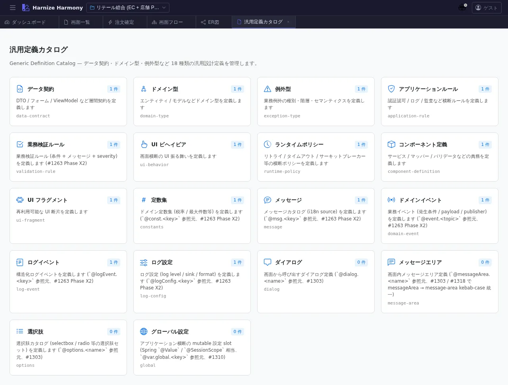

汎用定義カタログ
対象画面:
GenericDefinitionCatalogView(frontend/src/components/generic-definition/GenericDefinitionCatalogView.tsx) ルート:/w/:wsId/generic-definition種別: シングルトンタブ
概要
プロジェクト内の 汎用定義 (Generic Definition) を kind 別に俯瞰するカタログ画面。component-definition / constants / data-contract / domain-event / application-rule / policy / glossary-term / rfc の 8 kind を分類し、各 kind の件数 + 主要エントリのプレビューを並べる。
到達経路
- HeaderMenu → 「汎用定義」 → 「カタログ」
- ダッシュボード「機能別定義数」パネル → 汎用定義リンク
- 直接 URL:
/w/<wsId>/generic-definition
画面構成

主要エリア
- ヘッダー — タイトル「汎用定義カタログ」 + kind 一括追加ボタン
- kind 別カード — 8 kind それぞれ 1 カード
- kind 名 + 件数 + 主要 3-5 件のエントリプレビュー
- 「この kind の一覧へ」リンク →
/generic-definition/:kind
主要操作
| 操作 | 手段 | 結果 |
|---|---|---|
| kind 一覧画面へ | 各カードの「一覧へ」 | /generic-definition/<kind> に新タブ遷移 |
| 個別定義編集へ | エントリプレビューのリンク | /generic-definition/<kind>/<name> に遷移 |
| 新規 kind 追加 | 「kind 追加」ボタン | 利用可能 kind 一覧から選択 |
データ前提
- 空状態: 全 kind が「0 件」表示
- 意味のある状態: retail サンプルでは
component-definition: 1(OrderValidator)、constants: 1(OrderConstants)、data-contract、domain-event、application-rule各複数 件 - generic definitions は AJV validation 対象外 (draft-state policy 適用、warning 表示で許容)
関連仕様書
docs/spec/generic-definition-layer.md— 8 kind の意味 / メタモデル / 命名規約
関連 skill
/import-md <project>— 既存 markdown 設計書を generic-definition (data-contract / glossary-term 等) に変換
既知の制約・注意
- 各 kind の 必須スキーマは異なるため、新規追加時は対応 kind の spec を確認すること
- カタログは 概覧目的で、編集は個別の
/generic-definition/:kind/:nameEditor 画面で行う